Monitor
Your Mac, live across the whole bar: CPU with a two-minute history as an area chart, network up and down as sparklines, memory and disk as bars, the host name and the time. Polled once a second.

Bar apps · version 2.6 · ship with Deckhand
The CoreBar's own cards are small and static. A bar app takes the full 1424 × 280 screen and refreshes as often as once a second. Since 2.0 every app carries its own page; the ones that use only public data fetch it themselves and run with the Mac off, the others ask the Mac for what only the Mac knows.
How they work
The apps
Rendered at the bar's real size. The Monitor, Claude, Music, Calendar, Flights, Tasks, Training, Whisky Portfolio, SEO, Portfolio, Cloud Status, GitHub Actions, Jira Board, Climate, Books, Traffic, Connection, Chess, Teams and Walk pictures use demo data.
Your Mac, live across the whole bar: CPU with a two-minute history as an area chart, network up and down as sparklines, memory and disk as bars, the host name and the time. Polled once a second.
Which terminal needs you. Every Claude Code session on the Mac from the last hour becomes a card with the project, the first prompt and what it last said; the ones waiting for an answer pulse orange, with how long they have waited. Tokens used today in the corner.

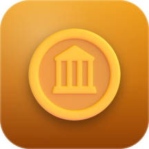
Up to five coins in your currency, each with a sparkline of the day and the change since midnight. Coins and currency are set in Deckhand under Apps → Crypto; the bar fetches the prices from CoinGecko itself, no API key.

Now plus three days for the Mac's location: condition, temperature, humidity, wind and the chance of rain, from Open-Meteo. Free, no account, no key, unlike the bar's own AccuWeather card.
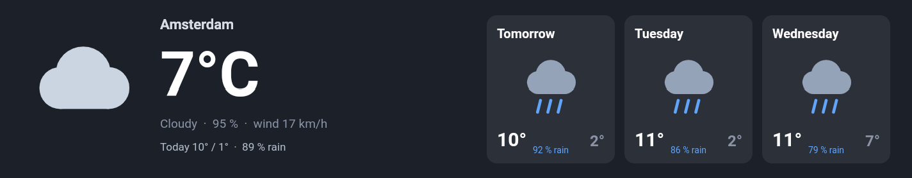
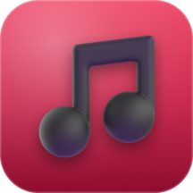
Apple Music with album art, title, artist and album, and a level meter while it plays. Previous, play or pause and next work from the bar's touch screen, through the Mac.
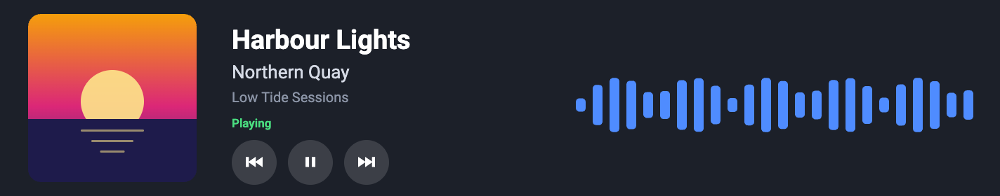
Today, tomorrow and the day after from the Mac's calendars, in the colours you already use. Past events fade; all-day events sit on top. Which calendars show is set in Deckhand under Apps → Calendar.

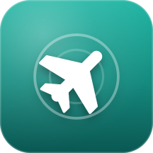
What is flying over right now. On the left a radar on an OpenStreetMap road map, scaled so the circle is exactly the radius you choose (3 km by default, up to 25); beside it up to four flights, each panel in its own colour — green, amber, blue, pink — and the same colour marks that plane and its flight number on the radar: callsign and airline, the route with both airports, altitude and whether it is climbing, speed, type and registration, distance and direction. Other aircraft in the circle are small grey planes. When the circle is empty it says so and shows the nearest aircraft within 25 km. The bar fetches the map tiles itself, darkens them for the night and keeps them for 30 days.
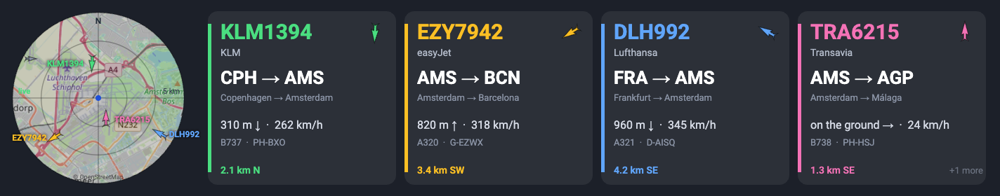
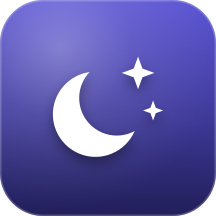
The sun on its arc for today, with sunrise, sunset, solar noon, golden hour, civil dawn and dusk and the day's length; the moon drawn in its real phase, with how much is lit, its age, rise and set, and the dates of the next full and new moon. All computed on the bar for the weather location.
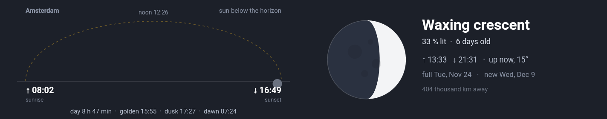
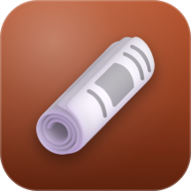
Four headlines at a time, rotating every fifteen seconds through the feed's top stories, with how long ago each was published. CNN by default; BBC World, the New York Times, The Guardian, NOS and NU.nl are a setting away.
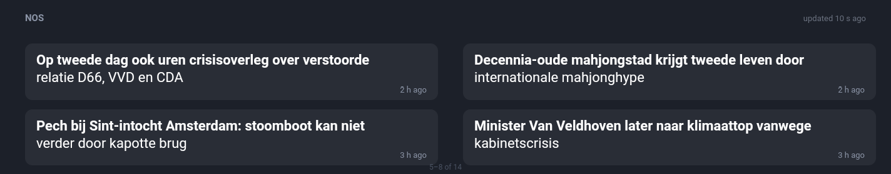
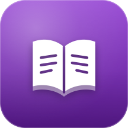
One Bible verse for the day, large and centred, from a list of well-known passages that changes with the date. The World English Bible, which is public domain.
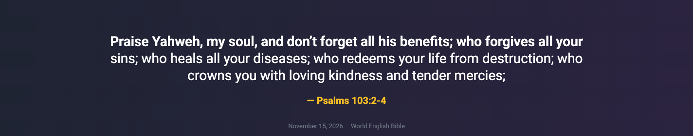
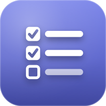
Your open Linear issues: what you have started first, then by priority and due date, each with its state and due day; overdue and due-this-week counts at the top. Tap an issue on the bar and press Done to close it in Linear; the list is refreshed every twenty seconds while the page is open. Needs a personal Linear API key, which Deckhand keeps in the Keychain on the Mac and which never reaches the bar.
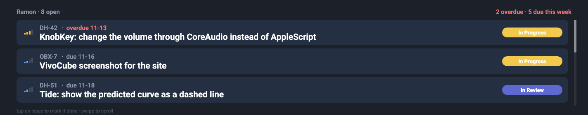
Ships at the ports and inland terminals you choose, live from AIS: one card per place with how many are on their way in and how many lie alongside, and the first few by name with a rough arrival time. Tap a place for its approach, a line from the far end to the berth with every arriving ship as a dot at its distance. You choose the places in Deckhand: find one with Apple Maps and set its area and approach on a map; without any, Haven watches the port of Rotterdam. Needs a free aisstream.io key, which Deckhand keeps in the Keychain on the Mac and which never reaches the bar.

Dutch water levels on your bar. Up to four Rijkswaterstaat gauges, each with the level now in cm NAP and which way it is going, today's curve against the predicted tide and the next high and low water, plus a small almanac with sunrise, sunset, day length and the moon. Hoek van Holland, Rotterdam and Nijmegen by default; pick your own gauges under Apps → Tide. Runs on the bar itself from Rijkswaterstaat's open water data; no account, no key.
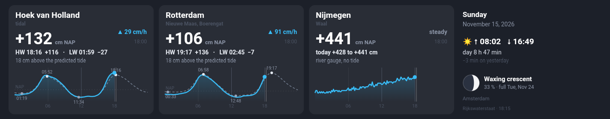
Amsterdam Schiphol as the tower sees it: the six runways with the aircraft landing on them and taking off from them, which runways are in use right now and how many movements there were in the last 15 minutes, worked out live from open ADS-B data. Add a free Schiphol Public Flight API key and the next arrivals and departures appear beside it, with gate, delays and the runway of the flight that is on final.

NOS Teletekst as it looks on television: black, the eight teletext colours and the block graphics. The bar is wide and low, so a page is split into two columns, read like a newspaper; a page that is mostly a picture, such as the weather map, is shown whole. The pages turn by themselves, and a tap on the right or left half goes to the next or previous one. By default the news index 101 with every story it lists, sport on 601 and the weather on 702; choose up to eight pages in Deckhand.

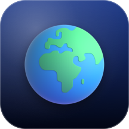
The whole planet, live. On the left a globe centred on your location, or turning slowly, lit where it is day, with every aircraft in the air, the satellites passing over and the earthquakes of the last day; beside it a world map with the same, plus the track of the International Space Station. On the right how many aircraft are flying, where the ISS is and how high, and the latest earthquakes. Tap the globe to let it turn, tap an earthquake to turn the globe to it.
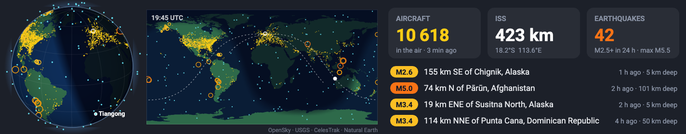
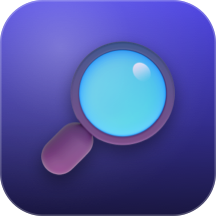
Your website at a glance. Google's Lighthouse scores for performance, SEO, accessibility and best practices, mobile or desktop with a tap, and the Core Web Vitals of real visitors; from Search Console the clicks, impressions, click-through rate and average position of the last 28 days against the 28 before, per day, and your top search terms; and a check of the page itself: title, description, heading, robots.txt, sitemap, https and the certificate. You set the site in Deckhand; Search Console needs your own Google sign-in, PageSpeed a free key from the same Google project.
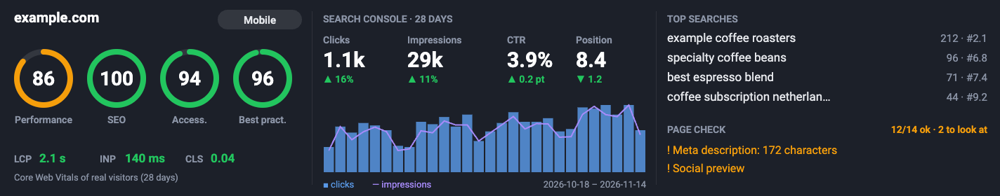
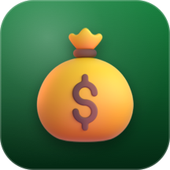
Your Kraken account at a glance: what it is worth now, the change over a day, week, month or year with its line, the highest and lowest point, and your cash. Per coin the amount, price, value and change. Tap a coin for the market around it: the 24-hour range with the price and the volume-weighted average, the day's open, volume and turnover, number of trades, bid, ask and spread. Uses a read-only Kraken key that can only query your balances.
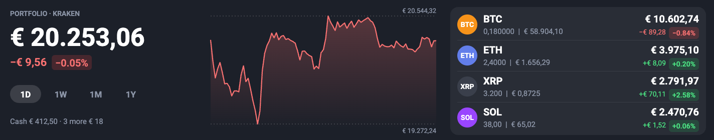
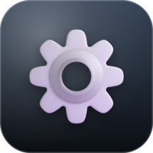
Your GitHub workflow runs from the last days, newest first. On the left how many workflows pass, fail or are running, counted by each workflow's latest run, so a failure you fixed no longer counts, and a dot per repository. On the right the runs with their repository, branch, trigger and how long they took, with a live clock while one runs. Tap a run for its result, attempt, start time and address; tap the left side to see only what is failing. Uses a fine-grained token that may only read Actions.
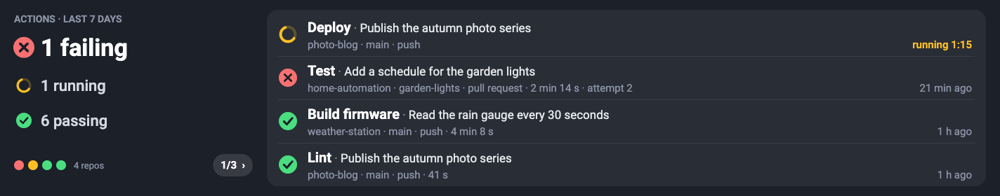
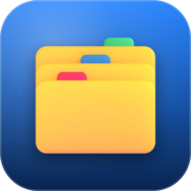
One Jira board on the bar. On the left the board, how many cards are open and how many are yours. On the right its columns, each with its number of cards and the top three: yours first and marked in blue, then the most urgent, with the key, type, priority, title and who has it. The last column, usually Done, is dimmed. Tap a column to see up to eight of its cards. Choose to show all cards or only yours. Works with scrum and kanban boards, company-managed and team-managed. Uses your e-mail and an Atlassian API token, and only reads.
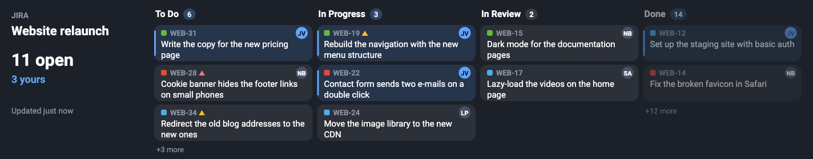
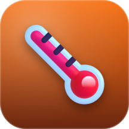
Your heating and your Netatmo weather station on one screen. On the left what tado is doing (off by the schedule, heating to 21° until 15:30, the next schedule change) and a tile per room with its temperature, CO₂ and humidity, plus outside with today's low and high. In the middle four buttons heat the house to 19, 20, 21 or 22 °C for one, two or four hours or until the schedule's next change, after which tado goes back to the schedule by itself; Back to schedule ends it at once. On the right the last 24 hours inside and outside. For a tado with one zone for the whole house; you sign in to tado on its own page and connect Netatmo with your own free Netatmo app.
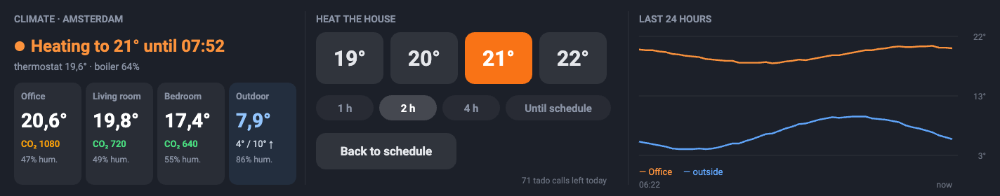
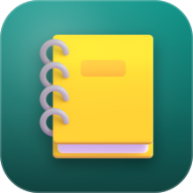
Your e-Boekhouden administration at a glance. On the left what is in the bank, per bank and cash account. In the middle what debtors still owe you and what you owe creditors, with how many invoices are open and how many are older than 30 days; tap either for its largest open invoices. On the right revenue per month against the same month last year, and the profit so far this year with its revenue and costs. Hide amounts until tapped keeps them as dots for a desk others can see. Uses an e-Boekhouden API token and only reads.
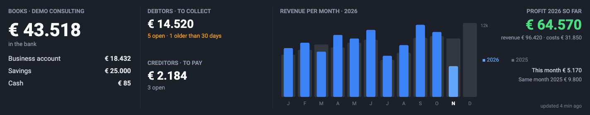
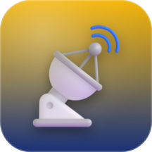
Your Mac's network traffic, in the spirit of Sniffnet. On the left the rate in and out right now and a chart of the window, incoming above the line in amber and outgoing below it in blue, with the totals. In the middle the hosts your Mac talks to, by name, local devices marked with a house (tap for the services instead: https, zoom, domain and so on), and on the right the apps that use the network most. Every line shows its bytes in the last minute, ten minutes or hour, with a bar split into in and out. No packets are captured and no administrator rights are needed: Deckhand reads macOS's own per-app counters.
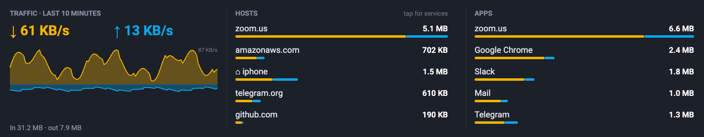
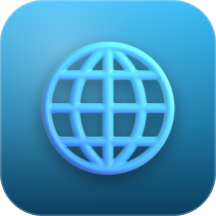
How your connection is doing, in the spirit of Network Weather. On the left a weather-style verdict, Clear skies, Cloudy or Stormy, saying where a problem is: your Wi-Fi, your home network, your provider or a service, with the latency to the router and the internet over the last ten minutes. In the middle the path from your Mac over Wi-Fi or cable to the router, your provider, the internet and the services you use (Microsoft 365, Zoom, Google, GitHub, Apple), each hop green, amber or red with its latency, the culprit ringed. On the right your ASUS router or ZenWiFi mesh with an admin login: internet up or down, CPU and memory, how many devices are connected and each AiMesh node with its devices. No administrator rights on the Mac and no packet capture.
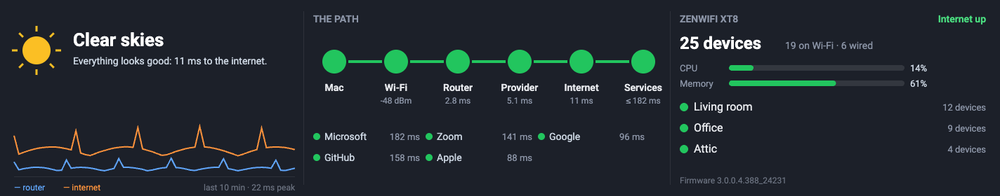
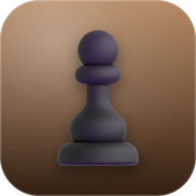
Your Chess.com games and ratings. On the left your rating for the time control you play most with its change this month, the other ratings to tap, your last ten results and the puzzle of the day. In the middle the board of the game in focus, from your side, with the last move and any check marked. On the right whose move it is and how long you have, or how the game ended, the opening, the last moves, the pieces taken and both accuracies; below it your daily games waiting for your move, your recent games and a chart of your rating. Solve the puzzle of the day on the bar by tapping a piece and its square.
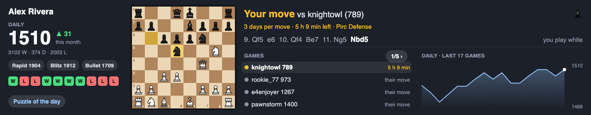
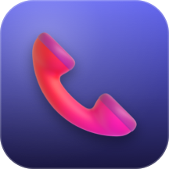
Your meetings and the people you call most. On the left the meeting on now or next with a countdown and a big Join button; in the middle the meetings after it, each with its own Join; on the right a speed dial of up to eight people: tap one for Call, Video or Chat. Teams opens on your Mac, where your headset and camera are, and Zoom and Google Meet links work too. The meetings come from the calendars on your Mac, so every organisation you work for is there without another sign-in.
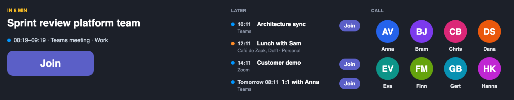
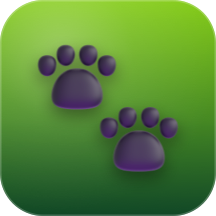
When the dog's next walk is due, fitted around your day. It says when it is time, waits until a meeting is over, and shows the best free moment today, a dry one if the rain allows. Tap Going now when you leave and Back home when you are back; the bar keeps count of today's walks and this week's minutes.
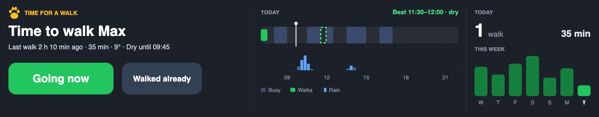
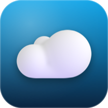
Is it them or me? Microsoft 365, Azure, AWS, Google Cloud and Workspace, GitHub, Cloudflare, Slack, Zoom, Atlassian, Claude and OpenAI at a glance, from their official status pages. A tile per service, the ones with an issue first, in amber for a partial problem and red for an outage; on the left whether everything is normal and which services are not. Tap a tile for what is going on: the incident, its latest update and since when. Pick up to twelve services, among them DigitalOcean, Vercel, Netlify and npm, under Apps → Cloud Status.
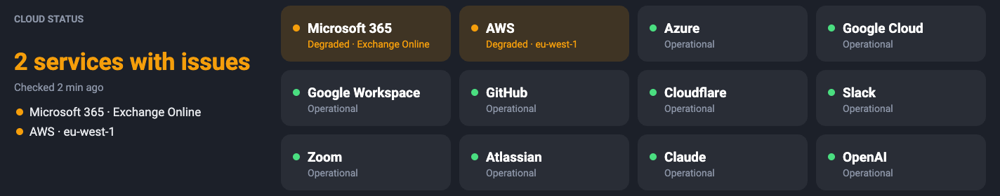
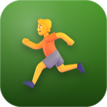
Your own activities on the bar: the latest with its route, the ones before it, this week against last week per sport, and the year so far. Connect once with your own Strava API application; Deckhand keeps the tokens on your Mac and the bar only gets the numbers and the shape of each route. Powered by Strava.

Your whisky collection at auction prices. What your bottles are worth together, against what you paid and a month ago, with a two-year trend per bottle; tap one for its latest auction days and the lots on offer now. Prices from the Whiskystats Data API with your own key, cached on the Mac and refreshed within a strict monthly credit budget.

Already on the bar
Next to Deckhand's apps and the vendor's marketplace, the CoreBar comes with cards and apps of its own. Deckhand lists them too: the cards on its CoreBar page, the apps under Apps → Built into the firmware.
| Clock | The time and date, with a picture. Deckhand puts its own picture there: today's weather and date, drawn on the Mac every hour. |
|---|---|
| World clock | The time in another time zone. Deckhand sets it to your Mac's time zone. |
| Weather | The bar's own forecast from AccuWeather, which needs a key (14-day trial, paid afterwards). Deckhand's Weather app and the Clock picture use Open-Meteo for free. |
| SenseCube | Temperature, humidity, light, presence and sound level: five cards the bar draws from the SenseCube. |
| Mac cards | CPU, memory, storage and network of the computer, and buttons such as play / pause. The bar asks the computer for these; Deckhand answers for the Mac. |
| App cards | One card per installed app, to open it from the page. |
| Apps | Settings, Calculator, Alarm clock, White noise, Videos, Sound Recorder, Wallpapers and Local Update. Calculator, Alarm clock and White noise get updates through the vendor's marketplace. |
|---|---|
| Games | Space Dodger and AuroraSniper. |
| Factory tools | TCWAging and UBX质检软件, the factory's burn-in and quality tests. They have an icon in the bar's app list but are not meant for you. |
| Turning them off | Firmware apps cannot be removed, but Deckhand can turn them off over the debug bridge: they disappear from the bar and stop running until you turn them on again. The launcher, the module hub, the keyboard and Android Settings are never offered. |
Install
The APKs are inside Deckhand; installing them is the one thing the bar's protocol cannot do, so it goes through Android's debug bridge.
brew install --cask android-platform-tools. Deckhand finds it in the usual places.Note
Monitor, Claude, Music, Calendar, Tasks, Haven, Training, Whisky Portfolio, Schiphol, SEO, Portfolio, GitHub Actions, Jira Board, Climate, Books, Traffic, Connection, Chess, Teams and Walk need Deckhand running on the Mac. Close Deckhand and they show "Waiting for the Mac…" until it is back; the others carry on.
Build your own
Deckhand's apps are one Android project with a flavor per app, in the repository under android/DeckhandMonitor. Fork it, or write the same thing in anything that runs on Android.
finish() through a small JavaScript bridge. No close button needed.